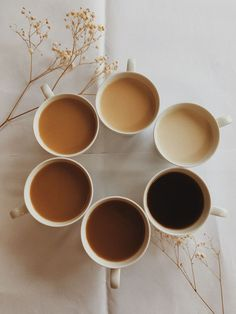

Our story is amazing
we were born in 2000
Foundress: Diana M.
The brand arrived in the country in 2008: today it has more than 130 stores where more than 1,700 partners work. From its first store in Alto Palermo, it sought to surprise its customers with a unique experience. Today the Starbucks Experience is enjoyed in different formats and locations around the country, from Neuquén and Córdoba to in the car on the way to work at the Drive Thru and its Al Río store, the first Coffee Experience Store in the country. Within the framework of its 10 years, it launched the Mobile app of its loyalty program, Di Coffee Rewards, which today has more than 130,000 members.
Inspiration
Di Coffe arrived to renew the trend in coffee consumption through the personalization and variety of its drinks, as well as with take away. This is how the brand has evolved together with its customers from 2008 to today, with the opening of stores in the Buenos Aires neighborhoods and the interior of the country, passing through the innovative Drive Thru store, the first coffee shop in Argentina with service to buy from the car, until the recent opening of Al Río, its Coffee Experience Store, where you can travel through the world of coffee through its different experiences with different preparation methods, attended entirely by Coffee Masters.
We keep growing
The opening of new stores and the start-up of the first locations in the interior – Rosario, Santa Fe and Córdoba (2011) – allowed the growth of employment sources. More than 1,700 partners work at Starbucks today, who have developed their expertise and passion for coffee within the company. Pablo Jaratz, general manager of Starbucks Argentina, highlights that “At Di Coffee we are proud to see the professional path traveled by our partners. Many of them have started their career as baristas in a store and today they are store managers or work teams in corporate areas such as Human Resources and Operations.”